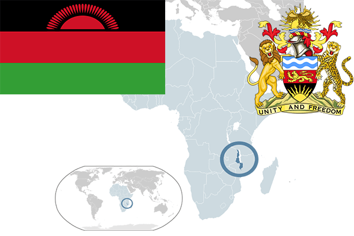

To`liq nomi: Malavi Respublikasi
Region: Janubiy Afrika
Qonunchilik shakli: Respublika
Mustaqillik kuni: 6-iyul 1964-yil (Birlashgan Qirollikdan)
Poytaxt: Lilongve
Maydoni: 118 494 km² (dunyoda 98 -o`rinda )
Chegaradosh davlatlari: Zambiya, Tanzaniya, Mozambik
Aholisi: 18,091,575 (dunyoda 64 - o`rinda, 2016 -yil roʻyxat)
Aholi zichligi: 128,8/km²
Aholining o`rtacha yoshi: 43,0 yil (42,6 ayollar, 43,4 erkaklar)
Rasmiy tili: Ingliz tili
Dini: 55% protestant, 20% katolik, 20% musulmon va mahalliy dinlar
Pul birligi: Malavi kvachasi
Telefon prefiksi: +265
Internet domen: .mw
Xalqaro tashkilotlarga a`zoligi: BMT (1964 – yildan)
Dengiz va okeanlarga chiqishi: yo`q
YIM: Butun: $ 22.658 mlrd, Jon boshiga $ 1 182 (2017 - yil roʻyxati)
Yirik shaharlari: Lilongve, Blantayr